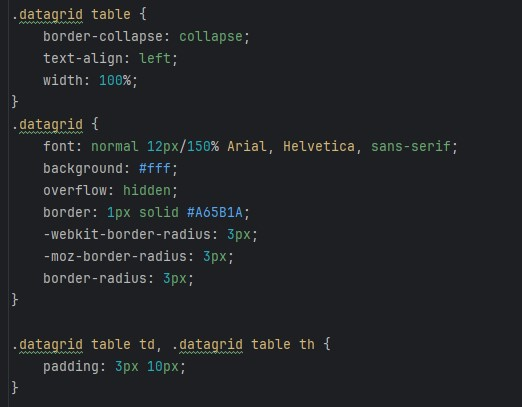
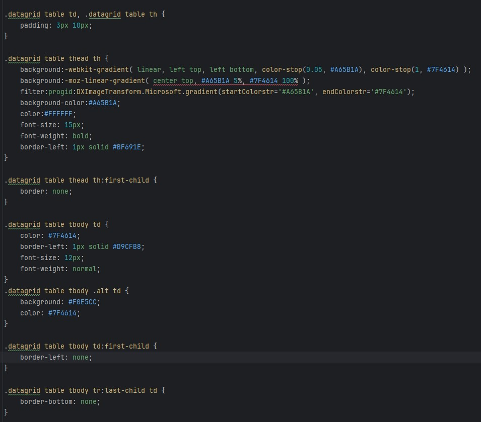
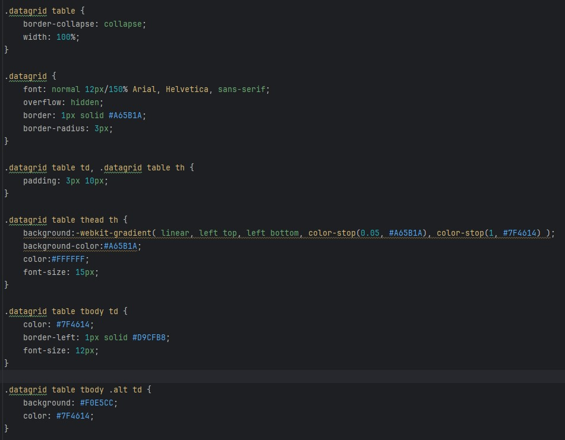

Zie hier de link naar personal homepage waar ik onderaan mijn tabel heb gemaakt.
Niet alle properties zijn noodzakelijk. Hangt af van ontwerp tot ontwerp natuurlijk, maar niet alle gegenereerde eigenschappen zijn relevant.
Het is essentieel om kritisch te kijken naar welke eigenschappen je daadwerkelijk wilt behouden en welke je kunt verwijderen om de code overzichtelijk te houden.
Zoals je hierboven kan zien, is er veel nutteloze code.
Ik heb nu veel minder code dan de 2 screenshots bovenaan met hetzelfde resultaat. Ik ben van 2 screenshots naar 1 screenshot gegaan.
Browser-prefixes werden oorspronkelijk gebruikt door de vroege versies van de browsers die bepaalde CSS-eigenschappen niet volledig ondersteunden.
Deze problemen worden nu opgelost door de regelmatige updates van de browsers.
In ons geval zijn ze dus niet nodig.